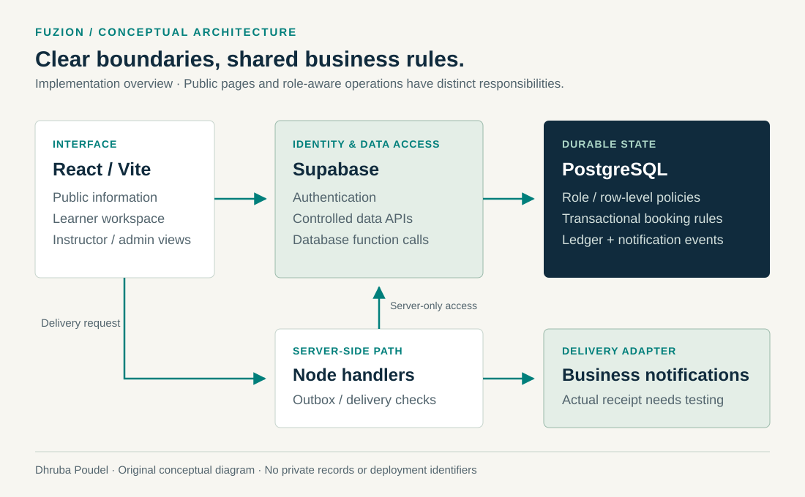
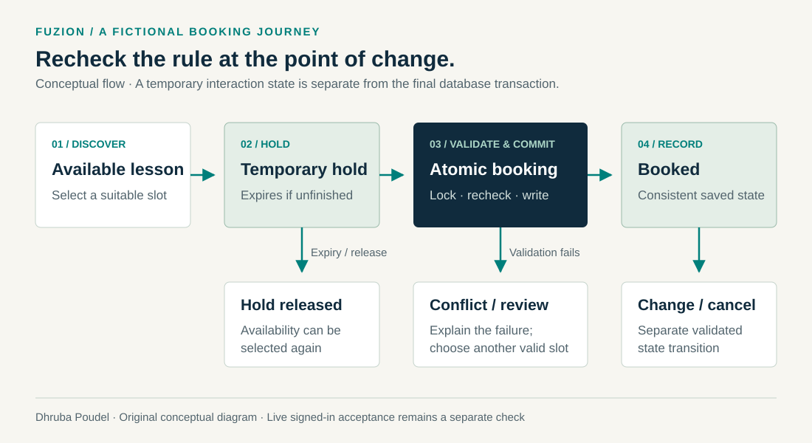

Commercial work · Website & service workflows
Fuzion Driving School
Designing the customer journey and the application rules behind a lesson.
- My contribution
- Website design and development, role-aware interfaces, booking rules, testing and release preparation.
- Engineering focus
- Translate scheduling, access and service rules into explicit application and database behaviour.
- Verified result
- Main-domain public website released. Signed-in operations and actual message receipt retain separate acceptance work.

Connect the customer journey to service operations.
A driving-school website needs to explain the service clearly and provide a useful path from lesson selection to booking. Behind that public journey are availability rules, lesson records and different responsibilities for learners, instructors and administrators.
I designed and developed Fuzion Driving School’s responsive website and learner platform, bringing those requirements into one application while keeping public information and role-based workflows distinct.
Keep the interface, data rules and delivery responsibilities clear.
I built reusable React interfaces for public service information, learner preparation and role-aware workspaces. Supabase provides identity and controlled data access; PostgreSQL functions and constraints enforce the booking rules. Separate Node handlers support server-side delivery work.

Access belongs in the data and service layers
Learner, instructor and administration interfaces have different responsibilities. Role checks and row-level data policies support those boundaries; hiding an interface control alone cannot establish permission.
Events and financial state need a durable record
The implementation uses an append-only ledger for balance changes and an outbox for notification events. Delivery work is separate from the user action that creates an event, with idempotency controls intended to avoid duplicate processing.
A booking button starts a state transition.
Consider a fictional example: two learners select the same available lesson. A temporary hold helps the interaction, but the final operation still needs to recheck availability and commit the booking consistently.
I implemented expiring holds, transactional slot locking and an instructor-overlap constraint. Validation also covers selected dates, instructor consistency and scheduling exceptions. A failed selection must leave a useful explanation and a consistent result.

Edge cases are part of the design
- Competing requests: recheck the selected slots within the database transaction.
- Clock changes: calculate recurring appointments against Sydney wall time across daylight saving.
- Closed or elapsed dates: preserve schedule exceptions and exclude appointments that have passed.
- Invalid selections: reject duplicate slots, mixed instructors and active booking conflicts.
Two scheduling-domain suites were freshly checked on 27 October 2026: 14 tests passed, covering Sydney daylight-saving transitions, availability closures, recurring-slot conflicts and package-price allocation. Database source contains the transactional and permission safeguards. Their existence is separate from a fresh end-to-end production test.
Keep the release evidence attached to its date.
I delivered the main-domain website while retaining a recovery path for the previous site and preserving the existing hosting and email assignment. The record below distinguishes a public release, implementation checks and the operational work still requiring acceptance.
| Area | Available evidence | Meaning / next check |
|---|---|---|
| Public release | The 9 October release record documents the main-domain launch, availability and login refresh checks, and anonymous administration redirect. The public homepage was reviewed again on 26 October. | Public website live. This establishes the public experience and the recorded release checks. |
| Automated checks | The 9 October release record reports 230 passing checks. Source includes scheduling, booking-selection and database regression checks. | Historical release evidence. A separate fresh check on 27 October passed 14 tests in two scheduling-domain suites. The complete 230-check release suite was not rerun; these are distinct checks. |
| Signed-in journeys | Developed learner, instructor and administration workflows. | Complete deployed journeys and resulting records still need owner acceptance. |
| Notification delivery | Outbox and sender foundations; the release record distinguishes provider acceptance from actual inbox receipt. | Actual receipt, consent behaviour and timed reminders require separate verification. |
| Business improvement | No recorded before/after measurement is claimed in this case. | Measure task completion, manual effort or rework against an agreed baseline before reporting an improvement. |
Follow one approved, isolated learner-to-booking journey through confirmation, a change or cancellation, and actual test-recipient notification receipt. Record the observed outcome at each step.
A public website and a clearly scoped platform case.
The public website is live. Signed-in operational acceptance remains a separate milestone. Automatic Google Calendar synchronisation is not connected; manual calendar links and downloads have different behaviour. Live card-payment acceptance is not claimed here.
The application source remains private. This case uses the public homepage, original conceptual diagrams and implementation summaries, with no learner records, staff workspaces, credentials or deployment identifiers.